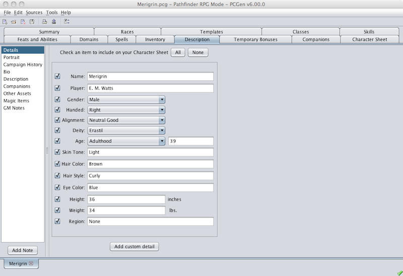
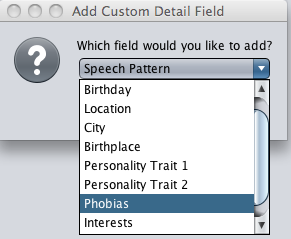
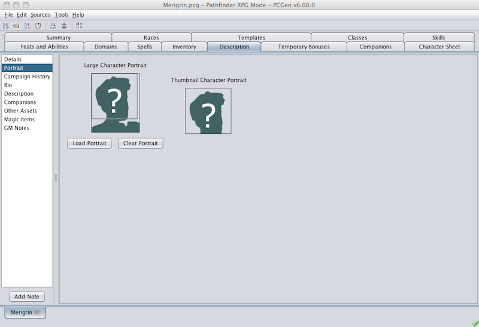
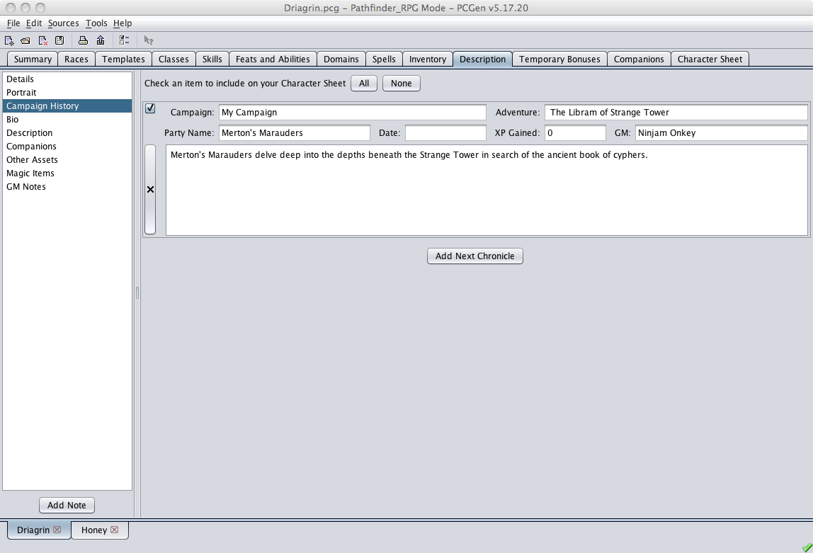
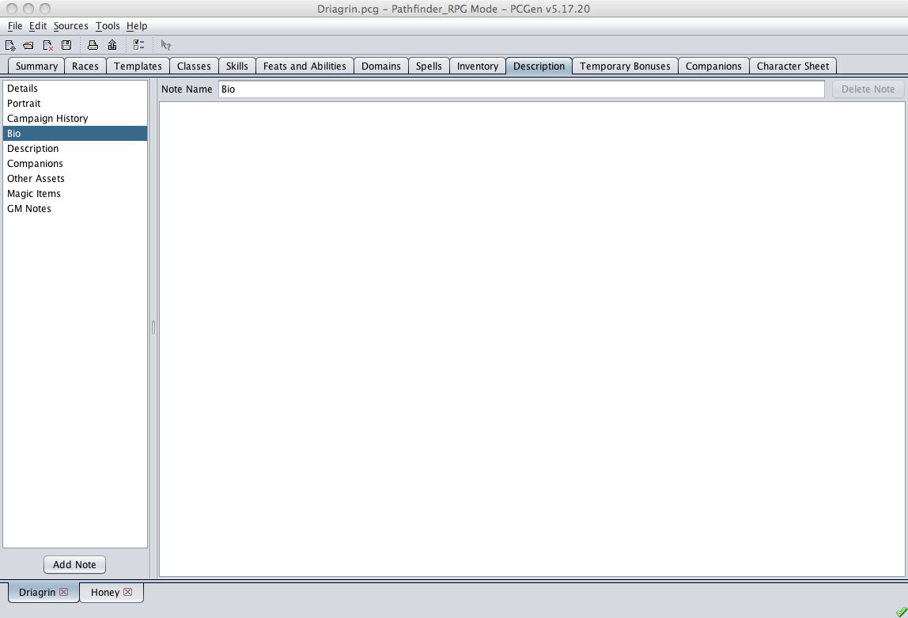

The Description tab allows the customization of the PC's features.

The left pane of this tab lists a number of notes where additional information on the current character can be stored. There are a number of standard notes provided by PCGen.
The Detail note is where the height, weight, age, etc. are detailed. Each piece of detail has a checkbox next to it. You can export this information to the Character sheet by clicking on the adjacent checkbox. Clicking the All button at the top of the Detail note will export all detail included on the page to the character sheet. Clicking the None button will prohibit all of the date from being exported.


The Portrait note provides the capability to include a character portrait on the character sheet. To add a portrait to your character simply click on the Load Portrait button beneath the "Large Portrait field and navigate to the desired jpg file. PCGen will display the selected file on the page and will automatically generate a thumbnail image.You can remove the portrait from the page by clicking the Clear Portrait button.

The Campaign History notes provides the user with a place to take notes on the characters adventures. To add a campaign note simply click the Add Next Chronicle button. To delete a chronicle you will click on the "X" button to the left of the chronicle to be deleted.
As with the Detail notes, checking the checkbox on thecampaign history page will include the history on the character sheet.

PCgen's other standard notes are very similar in form and function. These include the following:
The GM Notes is special as notes put in here will not be printed out on character sheets, keeping those particular notes safe from prying eyes!
You can add your own note pages to the Description tab by clicking on the Add Note button. The new note will appear with a name of "New Note" in the right hand window and the top of the new note. To rename the note you will need to edit the name in the name field above the new note.
To delete a note, click on the note and select the Delete Note button. This will remove the note.